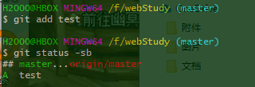
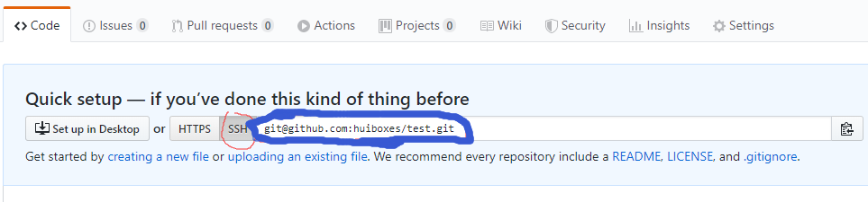

声明：本文以实际使用的角度出发，因为短时间内是不太好理解的，使用一定时间后自然就理解了，刚开始比较无趣，只有背命令。纸上得来终觉浅，绝知此事要躬行。
Github是什么？
Github是一个代码托管平台，可以通过此平台找到许多开源项目，可以共享自己的开源项目与他人共同开发、完善，由于只支持Git的版本库格式进行托管，所以名为Github。
Git是什么？工作流程是什么？
Git是一个开源的分布式版本控制系统。了解工作流程首先要知道四个东西：
Workspace：工作区
index/Stage：暂存区
Repository：仓库区
Remote：远程仓库
工作流程如下：在工作区中修改某些文件 → 对修改后的文件进行快照，然后保存到暂存区(add) → 提交更新，将保存在暂存区域的文件快照永久转储到Git目录中(仓库)(commit) → 将本地仓库push到远程仓库(push)
一、准备工作
1.安装Git Bash：在 https://gitforwindows.org/ 下载，然后一直下一步就好。
2.注册Github账户：点这里进入官网,英语不好的建议用chrome，翻译挺好用的。注册时全部默认下一步即可，注册完账号就创建一个新仓库，别的都不管，直接默认的选项点下一步即可，等后面没事了一定要有空就打开看看，每个都按一下，摸索一下(不要删除仓库和账号就好)。
二、配置Git Bash：
在命令行依次在输入下面的内容，输一行，按一次回车。
git config --global user.name "huibox" #上传用户的称呼 |
在任何地方只需要右击鼠标，然后选Git Bash here即可打开一个命令行界面，默认情况打开后就处于当前文件所在位置。命令行内可以运行简单的Linux命令。
三、配置Github
1、获取SSH公钥
rm -rf ~/.ssh/* #单击鼠标右键点击Git Bash here后输入 |
千万不能输错，不然就可能要重装系统了，回车后输入
ssh-keygen -t rsa -b 4096 -c "huiboxes@gmail.com" #生成ssh key |
按三次回车，得到ssh key。直接按，这个环节不会有任何错误。
cat ~/.ssh/id_rsa.pub #屏幕上输出ssh公钥 |
将打印出的内容全部复制下来，在bash终端下复制快捷键为ctrl+insert。在根目录下的.ssh目录中有两个文件，id_rsa是私钥，不要给任何人。
2、在Github添加公钥
打开https://github.com/settings/keys 。点击New SSH key按钮，title随便输入什么，在key下的表单内粘贴刚刚复制的内容，点Add SSH key。
3、测试是否已对接
ssh -T git@github.com #打开Git Bash后输入 |
如果提示输入yes/no就输入yes，只要没有看到一串包含successfully的英文，就要重第一步重新弄。
- 如果把key从电脑上删除了，重新生成一个就好了，替换之前的key。
- 一个电脑只需要一个key。
- 其他设备如果想的key上传到Github可以和之前的 key共存在Github上
- 一个key可以访问所有的仓库。
四、使用Git
1、本地仓库的使用(跟着敲会有奇效)
在你认为合适的盘符下创建一个文件夹，进入该文件夹右击鼠标点Git Bash here。然后输入git init初始化本地仓库，这个文件夹就成了工作区。使用命令行就简单多了，如下：
cd /f #进入f盘（路径随意） |
fileName文件夹内会多出一个名为.git的隐藏文件夹，对该文件夹下内容的任何改动都会被git记录，不要动这个隐藏文件。
touch test #创建名为test的空文件=windows右键创建没有后缀名的文件 |

可以看到所创建的文件名前会有两个??。因为你还没有对该文件进行过git操作，git不知道你后面会怎样对待这些文件的变动（增加、删除、更改都是变动）。

使用git add 你创建的文件名将某个文件添加到暂存区，使用git add .将当前目录里面所有的变动都加到暂存区。再次使用git status -sb会看到??变成了A(即Add添加)。

使用git commit 你创建的文件名 -m "注释信息，方便以后查看"将某个文件提交到本地仓库，使用git commit . -m "注释"将当前目录里文件都提交到本地仓库。这时再使用git status -sb会发现A变成了M(即Modified修改)。
2、将本地仓库上传到Github
在文章开头就提到过在Github创建一个仓库，就是为了这一步。进入仓库首页复制你的仓库地址。

选这个SSH因为用HTTPS的话以后每次更新都要输入密码。之前上传SSH公钥就是为了用SSH。接下来依次在命令行输入下面的内容。
git remote add origin git@github.com:huiboxes/test.git #可以在github复制然后在命令行粘贴 |
刷新Github你会发现你的仓库上传上去了。
3、将Github上的仓库克隆到本地
找到一个觉得不错的开源仓库或者自己创建个新仓库，打开仓库首页单击Clone or download复制SSH地址，进入一个你想作为存放工作区的文件夹输入
git clone 粘贴刚刚复制的地址 |
运行完后会发现文件夹内多出一个与你github上仓库同名的文件夹。将工作区内的变更(增加、删除、改动都是变更)上传到Github的话，只需加上git pull 与git push。完整流程如下：
git add → git commit → git pull → git push